Data Science for Electron Microscopy
Lecture 9: Imaging Inverse Problems 2
A Brief History of Resolution
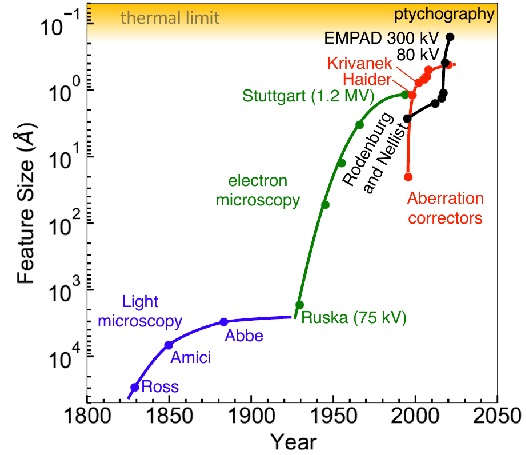
Ptychography in STEM
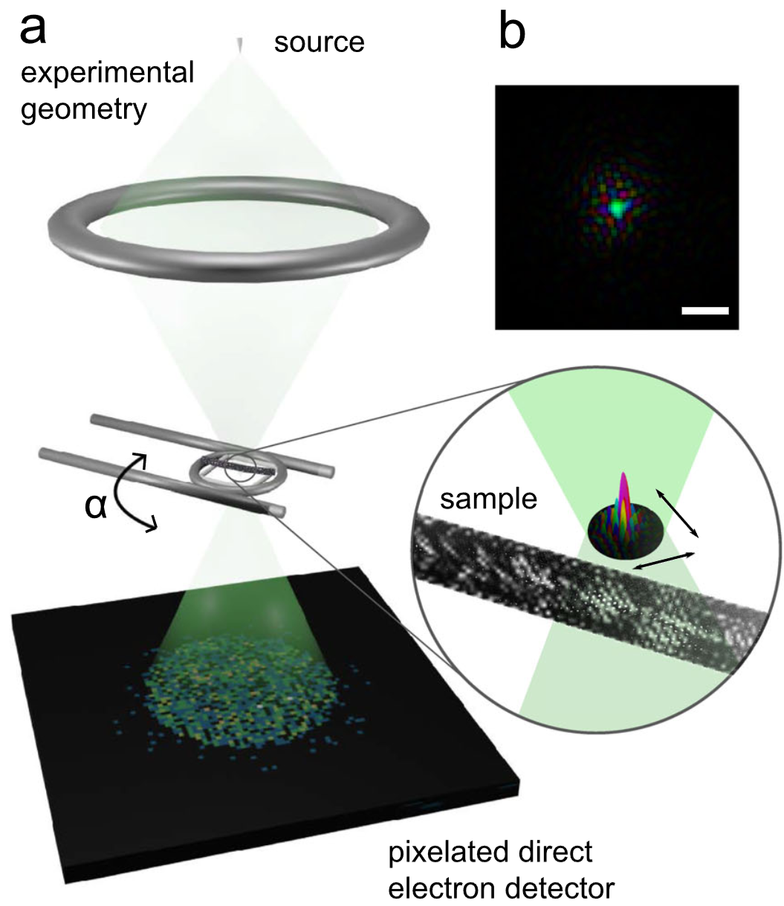
[1] Pelz, Philipp M et al. (2023), doi:10.1038/s41467-023-43634-z
Steps to Solve Inverse Problems
Step 1: Design Model + Optimization Problem
\[ \arg \min_{P,O} \sum_p \left|\sqrt{I_p} - |F[P(\vec{r}-\vec{r_p}) \cdot O(\vec{r})]|\right|^2 \]
where:
- \(I_p\) is the measured diffraction pattern
- \(P\) is the probe function
- \(O\) is the object function
- \(\vec{r_p}\) is the probe position
- \(F\) denotes Fourier transform
The forward model is: \[ I_p = |F[P(\vec{r}-\vec{r_p}) \cdot O(\vec{r})]|^2 \]
Step 2: Find Solution via Iterative Algorithms (Solvers)
- Design and implement iterative optimization algorithms
- Handle constraints and regularization
- Monitor convergence and solution quality
Model Parameters in Ptychography
- Noise model (Gaussian vs. Poisson)
- Mixed-states ptychography [1]
- \(I(\vec{r_p}) = \sum_k |F[P_k(\vec{r}-\vec{r_p}) \cdot O(\vec{r})]|^2\)
- Fly-scan, partial coherence, beam vibration
- Scan position correction
- Orthogonal probe relaxation (OPR) [2]
- \(I(\vec{r_p}) = |F[P_{rp}(\vec{r}) \cdot O(\vec{r})]|^2\)
- Position error, probe variation
[1] Thibault, Pierre et al. (2013), doi:10.1038/nature11806, [2] Odstrcil, Michal et al. (2016), doi:10.1364/OE.24.008360
Use all electrons: improved resolution and contrast
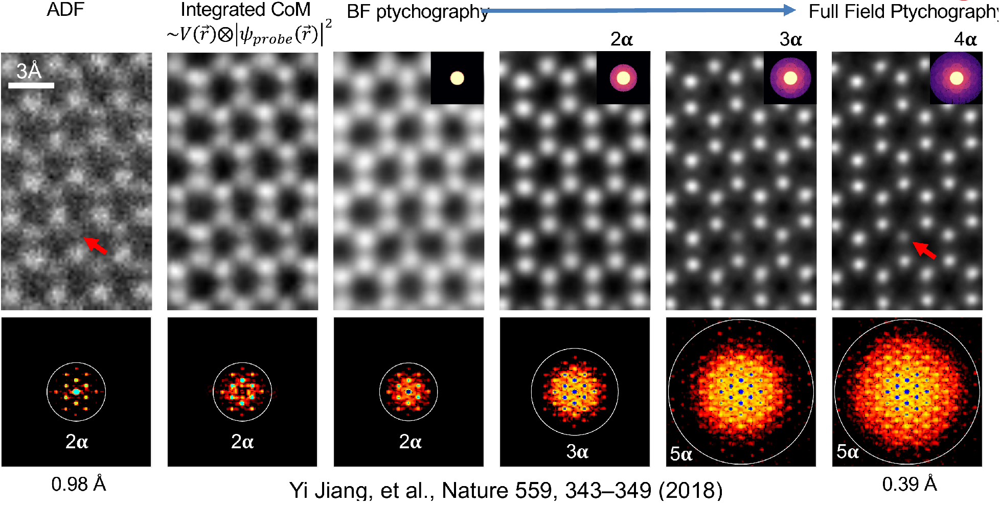
slide credit: D. Muller, M&M PMC 2023
Dose vs. Resolution: 2 Regimes
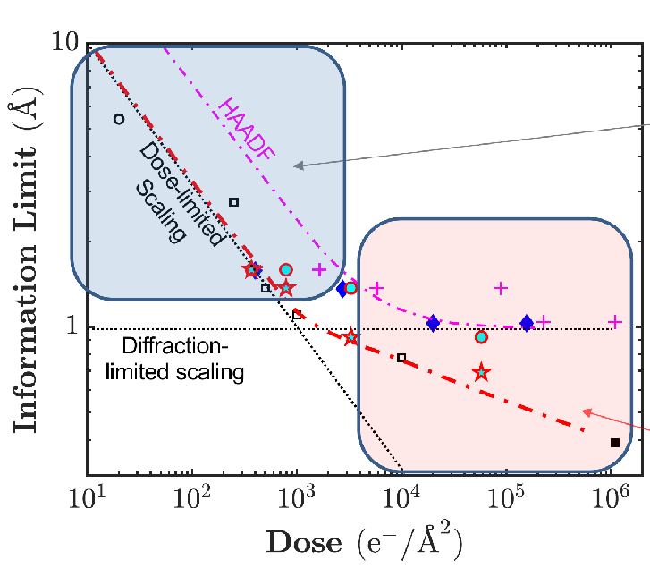
Low Dose Regime
- Poisson noise uncertainty >> probe size
- Resolution scales as \(d \propto \frac{1}{\sqrt{N}}\)
- Ptychography provides 2x information limit compared to ADF at same dose
High Dose Regime
- Probe size limited by diffraction
- ADF resolution saturates
- Ptychographic resolution continues improving with dose (2-3x better)
[1] Chen, Zhen et al. (2020), doi:10.1038/s41467-020-16688-6, slide credit: D. Muller, M&M PMC 2023
Key parameters for experimental data: scan step size
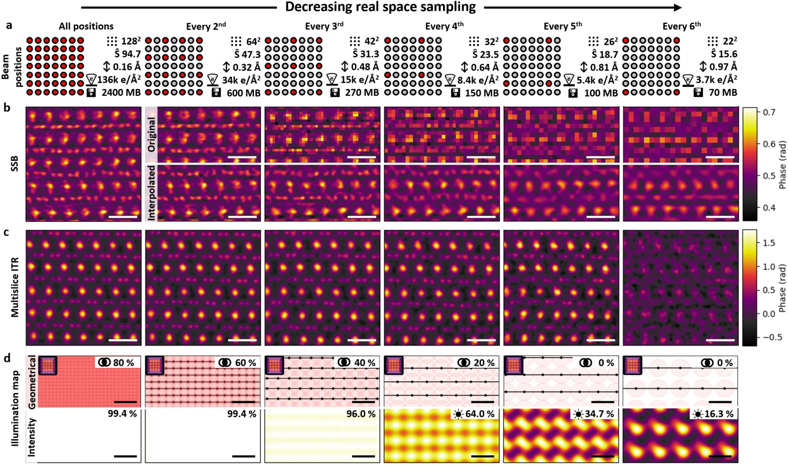
[1] Skoupy, R et al. (2025), doi:10.1038/s41598-025-09871-6
Key parameters for experimental data: detector sampling
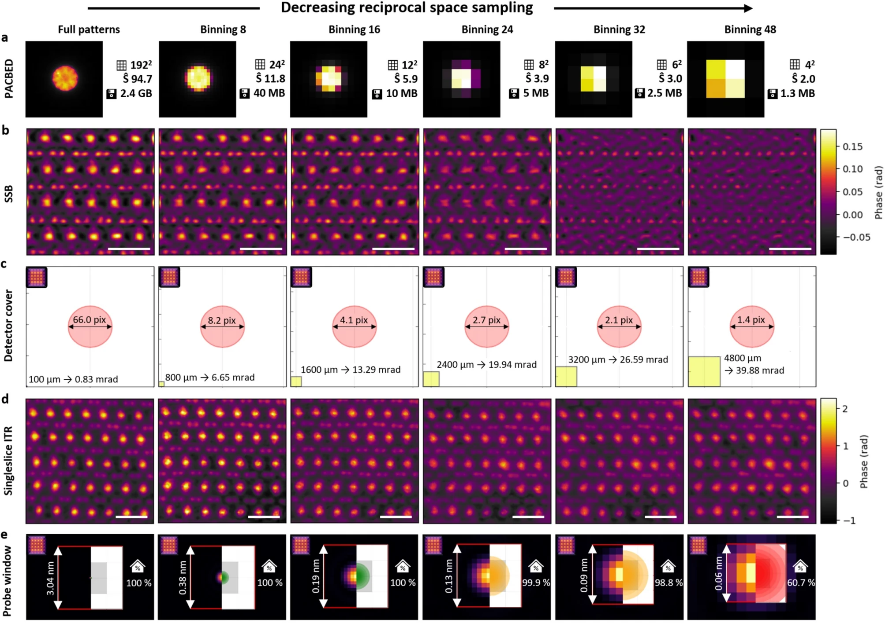
[1] Skoupy, R et al. (2025), doi:10.1038/s41598-025-09871-6
The Strong Phase Approximation (SPA)
The Strong Phase Approximation (SPA) models the interaction between the electron beam and specimen as a simple phase shift:
\[\psi(r) = \psi_0(r) e^{i\sigma V(r)}\]
where:
- \(\psi(r)\) is the exit wave
- \(\psi_0(r)\) is the incident wave
- \(\sigma\) is the interaction parameter (depends on beam energy)
- \(V(r)\) is the specimen projected potential
Key assumptions:
- Probe shape remains unchanged: \(|\psi(r)|^2 = |\psi_0(r)|^2\)
- Neglects beam spreading and propagation effects
- Treats specimen potential as a pure phase object
The SPA breaks down for:
- Thick specimens (>10-20 nm)
- Low energy electrons (<60 keV)
- Strong scattering potentials
Multi-slice ptychography for thick samples
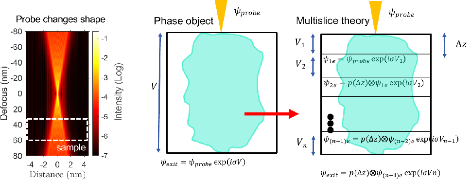
- High resolution preserved up to at least 30 nm thick sample
- Phase change is linearly dependent on thickness
Ambiguity in depth sectioning: The Missing Wedge
- probe propagator in multi-slice ptychography has a characteristic form:
\[\mathbb{P}(\mathbf{k}, \Delta z) = \exp(-i\pi \lambda \Delta z|\mathbf{k}_r|^2)\]
- leads to lines of constant phase where:
\[\Delta z \propto \frac{1}{|\mathbf{k}_r|^2}\]
This relationship creates an ambiguity in depth sectioning, known as the “missing wedge” problem.
To address this, regularization is applied to the object layers using:
\[W(\mathbf{k}) = 1 - \arctan\left(\frac{\beta^2 k_z^2}{k_r^2}\right)/(\pi/2)\]
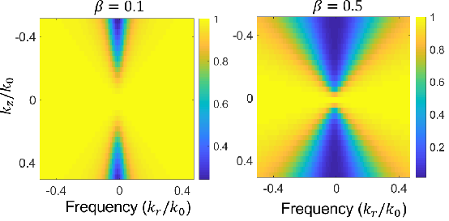
where:
- \(\beta\) is the weighting strength parameter
- \(k_z\) is the wave vector component along the optical axis
- \(k_r\) is the transverse wave vector magnitude
This regularization helps stabilize the reconstruction while preserving high-frequency information.
[1] Chen, Zhen et al. (2021), doi:10.1126/science.abg2533, slide credit: D. Muller, M&M PMC 2023
Thermal Vibrations as a Resolution Limit: MS-Ptycho of PrScO3
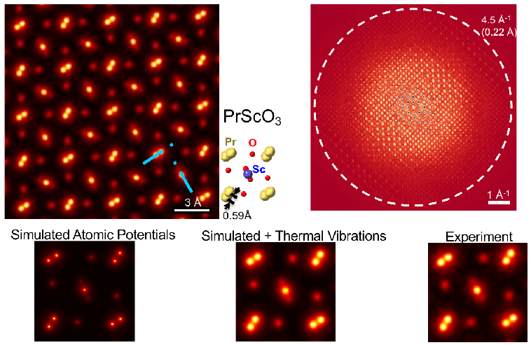
- Thermal vibrations limit resolution
- Resolution limit of 22pm
[1] Chen, Zhen et al. (2021), doi:10.1126/science.abg2533
Implementing ptychography with gradient descent: the cropping operation
#| classes: "tall-cell"
import torch
def crop_windows(image, positions, window_size):
"""
Crop windows from an image at specified positions using PyTorch.
Windows are cropped starting from the top-left corner of the specified position.
Positions wrap around image boundaries.
Args:
image (torch.Tensor): Input image tensor
positions (torch.Tensor): Kx2 tensor of (x,y) positions
window_size (int): Size of square window to crop
Returns:
torch.Tensor: Tensor of K cropped windows
"""
# Initialize output tensor
num_windows = positions.shape[0]
windows = []
h, w = image.shape
# Crop window at each position
for i, (x, y) in enumerate(positions):
# Get wrapped indices
x_indices = torch.arange(x, x + window_size) % w
y_indices = torch.arange(y, y + window_size) % h
# Create meshgrid of indices
Y, X = torch.meshgrid(y_indices, x_indices, indexing='ij')
# Index image with wrapped coordinates
window = image[Y, X]
windows.append(window)
windows = torch.stack(windows, dim=0)
return windows
Implementing ptychography with gradient descent: the forward model
#| classes: "tall-cell"
def forward_model(probe, object_func, positions, window_size):
"""
Implement the ptychographic forward model using PyTorch.
Args:
probe (torch.Tensor): Complex probe function
object_func (torch.Tensor): Complex object function
positions (torch.Tensor): Kx2 tensor of (x,y) scan positions
window_size (int): Size of square window to crop
Returns:
torch.Tensor: Stack of K diffraction patterns
"""
# Crop object windows at scan positions
object_windows = crop_windows(object_func, positions, window_size)
# Multiply probe with object windows
exit_waves = probe * object_windows
# Take Fourier transform
diffraction = torch.fft.fft2(exit_waves)
# Calculate intensity (magnitude squared)
intensity = torch.abs(diffraction)
return intensityImplementing ptychography with gradient descent: generating simulated data 1
#| fig-height: 4
#| fig-width: 10
#| code-fold: true
#| code-summary: "Show the code"
import numpy as np
import torch as th
import skimage.data as skdata
import skimage.transform as sktrans
import matplotlib.pyplot as plt
from scipy.ndimage import gaussian_filter
# Create defocused wave function
def defocused_wave(size=32):
x = th.linspace(-1, 1, size)
y = th.linspace(-1, 1, size)
X, Y = th.meshgrid(x, y, indexing='ij')
R = th.sqrt(X**2 + Y**2)
# Phase function simulating defocus
k = 8 # Wave number
z = 0.1 # Defocus distance
phase = k * (R**2)/(2*z)
# Create circular amplitude mask
center = size // 2
Y, X = th.meshgrid(th.arange(size), th.arange(size))
dist_from_center = th.sqrt((X - center)**2 + (Y - center)**2)
radius = size // 4 # Adjust radius as needed
amplitude_mask = (dist_from_center <= radius).float()
# Complex wave function
wave = amplitude_mask.to(th.float32) * th.exp(1j * phase)
wave = th.fft.fftshift(wave)
wave = th.fft.ifft2(wave)
wave = th.fft.fftshift(wave)
return wave
# Define PSNR function
def PSNR(img1, img2):
"""
Calculate Peak Signal-to-Noise Ratio between two images
Args:
img1, img2: numpy arrays of same shape
Returns:
PSNR value in dB
"""
mse = np.mean((img1 - img2) ** 2)
if mse == 0:
return float('inf')
max_pixel = 1.0 # assuming normalized images [0,1]
return 20 * np.log10(max_pixel / np.sqrt(mse))
# Define SSIM function
def SSIM(img1, img2):
"""
Calculate Structural Similarity Index between two images
Args:
img1, img2: numpy arrays of same shape
Returns:
SSIM value between -1 and 1 (1 = identical images)
"""
from skimage.metrics import structural_similarity as ssim
return ssim(img1, img2, data_range=1.0)
img = skdata.astronaut()
img = sktrans.resize(img, (64, 64))
img = gaussian_filter(img, sigma=1)
# Convert to grayscale by taking mean across color channels
img = np.mean(img, axis=2)
img = img.astype(np.float32) / 255.0
img = th.from_numpy(img) Implementing ptychography with gradient descent: generating simulated data 2
# Generate and display the wave function
wave = defocused_wave(size=64)
wave = wave / th.norm(wave)
fig, (ax1, ax2) = plt.subplots(1, 2, figsize=(10, 4))
ax1.imshow(th.abs(wave), cmap='gray')
ax1.set_title('Amplitude')
ax1.axis('off')
# Plot phase
ax2.imshow(th.angle(wave), cmap='hsv')
ax2.set_title('Phase')
ax2.axis('off')
plt.tight_layout()
plt.show()Implementing ptychography with gradient descent: generating simulated data 3
# Create 2D grid of positions with step size 4
x = th.arange(-16, 64-16, 4)
y = th.arange(-16, 64-16, 4)
X, Y = th.meshgrid(x, y, indexing='ij')
positions = th.stack([X.flatten(), Y.flatten()], dim=1)
# Plot image with scan positions overlaid
plt.figure(figsize=(6,6))
plt.imshow(img.numpy(), cmap='gray')
plt.scatter(positions[:,0], positions[:,1], c='red', alpha=0.5, s=20)
plt.title('Scan positions overlaid on image')
plt.axis('off')
plt.show()
Implementing ptychography with gradient descent: generating simulated data 4
complex_image = torch.polar(th.ones_like(img), img/img.max()*0.4)
measured_amplitude = forward_model(wave, complex_image, positions, wave.shape[0]) + 1e-10
# Plot intensities as a mosaic
n = int(np.sqrt(len(positions))) # Grid size
from torchvision.utils import make_grid
# Reshape and normalize the measured amplitudes for visualization
grid_images = torch.fft.fftshift(measured_amplitude[:n*n]) # Take only complete grid
grid_images = grid_images / grid_images.max() # Normalize to [0,1]
# Create image grid
grid = make_grid(grid_images.unsqueeze(1), nrow=n, padding=2, normalize=False)
# Permute dimensions to get correct shape (H,W,C)
grid = grid.permute(1, 2, 0)
# Display the grid
plt.figure(figsize=(12, 12))
plt.imshow(grid.squeeze().numpy(), cmap='gray')
plt.title('Intensity patterns at each scan position')
plt.axis('off')
plt.show()Implementing ptychography with gradient descent: solving the inverse problem
#| code-fold: true
#| code-summary: "Show the code"
# Initialize random guess for object
guess = th.polar(th.ones_like(img), th.randn_like(img)*1e-8)
guess.requires_grad = True
# Optimization parameters
num_epochs = 20
batch_size = len(positions) // 2
learning_rate = 3e-2
optimizer = th.optim.Adam([guess], lr=learning_rate)
print(len(positions))
# Training loop
for epoch in range(num_epochs):
# Randomly select batch_size positions
batch_indices = th.randperm(len(positions))
losses = 0
# Process batch_size positions at a time
for i in range(0, len(positions), batch_size):
# print(batch_indices[i:i+batch_size])
batch_pos = positions[batch_indices[i:i+batch_size]] # Get batch of positions
batch_amp = measured_amplitude[batch_indices[i:i+batch_size]] # Get corresponding intensities
# Forward pass for this position
pred_amp = forward_model(wave, guess, batch_pos, wave.shape[0])
# Calculate loss for this position
loss = torch.nn.functional.mse_loss(pred_amp, batch_amp)
losses += loss.item()
# Backward pass
optimizer.zero_grad()
loss.backward()
optimizer.step()
# Print progress every 10 epochs
if (epoch + 1) % 1 == 0:
print(f'Epoch [{epoch+1}/{num_epochs}], Loss: {losses:.4f}')
# Plot results
fig, (ax1, ax2, ax3) = plt.subplots(1, 3, figsize=(15, 5))
gt_phase = th.angle(complex_image)
gt_phase -= gt_phase.min()
res_phase = th.angle(guess).detach().numpy()
res_phase -= res_phase.min()
# Plot original phase
ax1.imshow(gt_phase, cmap='gray', vmax=gt_phase.max(), vmin=gt_phase.min())
ax1.set_title('Original Phase')
ax1.axis('off')
# Plot reconstructed phase
ax2.imshow(res_phase, cmap='gray', vmax=gt_phase.max(), vmin=gt_phase.min())
ax2.set_title('Reconstructed Phase')
ax2.axis('off')
# Plot absolute error
error = th.abs(th.angle(guess).detach() - th.angle(complex_image))
ax3.imshow(error.numpy(), cmap='hot')
ax3.set_title('Absolute Error')
ax3.axis('off')
plt.tight_layout()
plt.show()
Ptychographic Tomography Solves Nanostructures


First 3D atomic structure solved with phase-contrast tomography.
Novel ZrTe2 phase, confirmed stable with DFT simulations.
Pelz, Philipp M. et al. (2023), doi:10.1038/s41467-023-43634-z
Depth Resolution Progress Over Time

Pelz, Philipp M. et al. (2023), doi:10.1038/s41467-023-43634-z, Romanov, Andrey et al. (2024), doi:10.1088/2515-7639/ad9ad2, You, Shengbo et al. (2024), doi:10.1088/1402-4896/ad9a1a
Multi-Slice Ptychographic Tomography
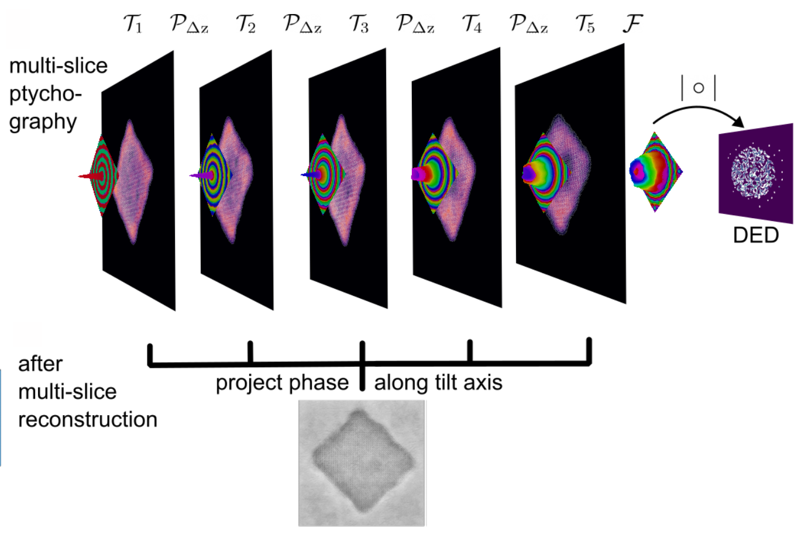
for each tilt angle
and project the potential along z
✅ Advantages:
- Decouple tomographic alignment from ptychographic reconstruction
- Can use positions and alignment as input to E2E-MSPT

❌ Disadvantage:
- Loses some 3D info from MSP


Romanov, Andrey et al. (2024), doi:10.1088/2515-7639/ad9ad2
Joint Tomography and Rigid Alignment enables atomic resolution of beyond-DOF volumes
Enabled by reaching sub-pixel alignment at each scale
Romanov, Andrey et al. (2024), doi:10.1088/2515-7639/ad9ad2
3x DOF volumes display atomic resolution

Volume size: (18.2 nm)3 Voxel size: 0.3 Å
Romanov, Andrey et al. (2024), doi:10.1088/2515-7639/ad9ad2
Orthoslices reveal lattice in all 3 dimensions
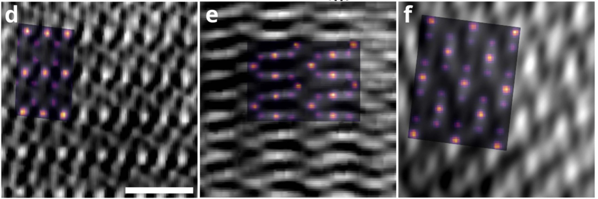
Lattice resolved, but Co atom contrast overpower O contrast
=> Around 1 Å z resolution required to resolve O atoms
Romanov, Andrey et al. (2024), doi:10.1088/2515-7639/ad9ad2
End-to-end reconstruction - putting all pieces together
Fully E2E-MSPT reconstruction includes
- affine resampling of potential volume
- z-resampling of potential volume (save compute)
- batch-croppping and mixed-state multi-slice model
- far-field propagation
- gradient backpropagation through full model

The most accurate approximation for 4D-STEM tomography to-date
You, Shengbo et al. (2024), doi:10.1088/1402-4896/ad9a1a

Successive approximations help initialize “nuisance parameters”

Successive initialization reduces compute
overhead of the most accurate models
You, Shengbo et al. (2024), doi:10.1088/1402-4896/ad9a1a
Limited-Angle Tomography is an option now

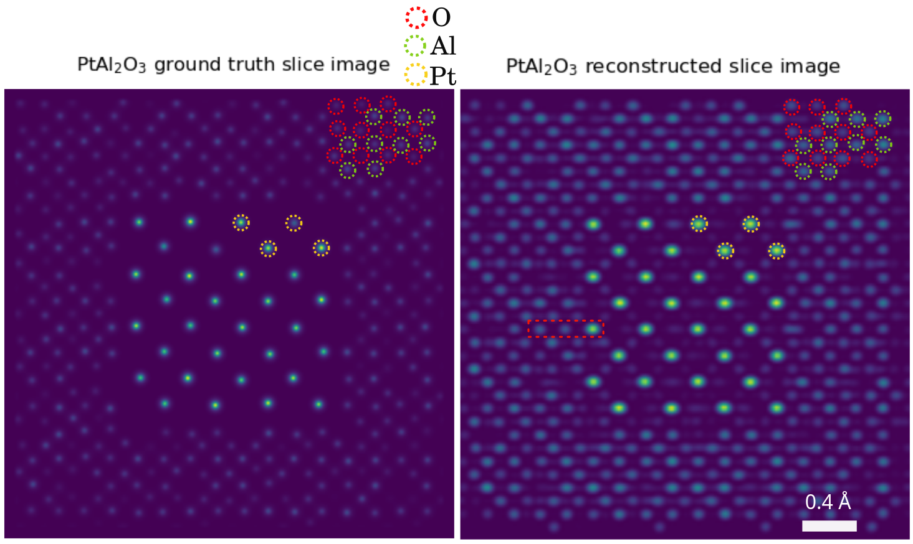
Light and heavy atoms recovered in 3D with 90-degree tilt range.
You, Shengbo et al. (2024), doi:10.1088/1402-4896/ad9a1a
Sub-Ångstrom alignment accuracy demonstrated in simulations

Al2O3 nanoparticle


Mean alignment error < voxel size (0.4 Å)
You, Shengbo et al. (2024), doi:10.1088/1402-4896/ad9a1a
Volume displays clear atomic contrast in 3D
Recovery of missing wedge with only physical priors.
Reached Nyquist resolution of 0.82 Å
You, Shengbo et al. (2024), doi:10.1088/1402-4896/ad9a1a
Volume displays clear atomic contrast in 3D
2
1
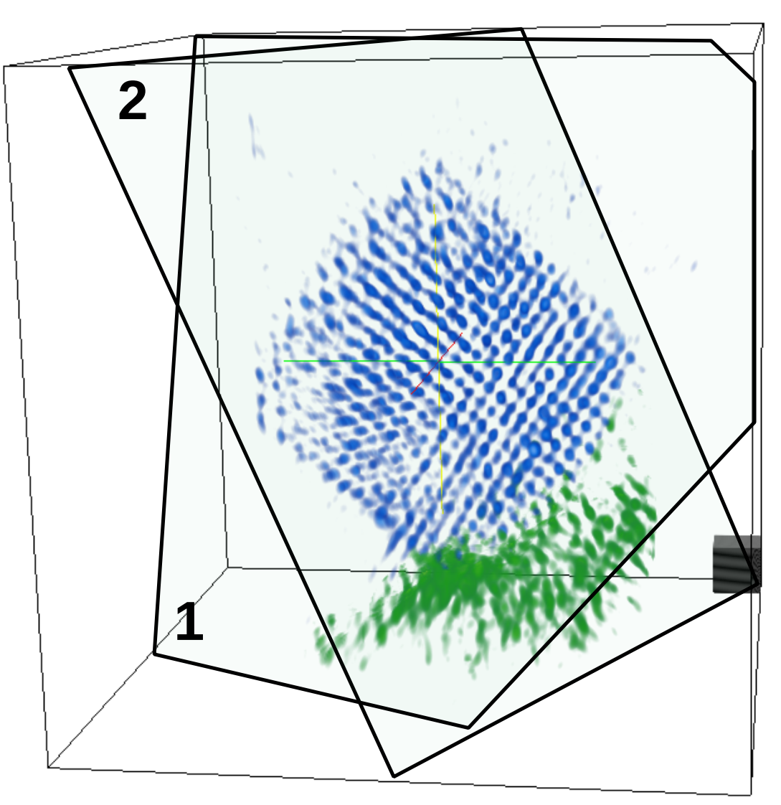
All directions recovered well
Dose reduction by sub-sampling

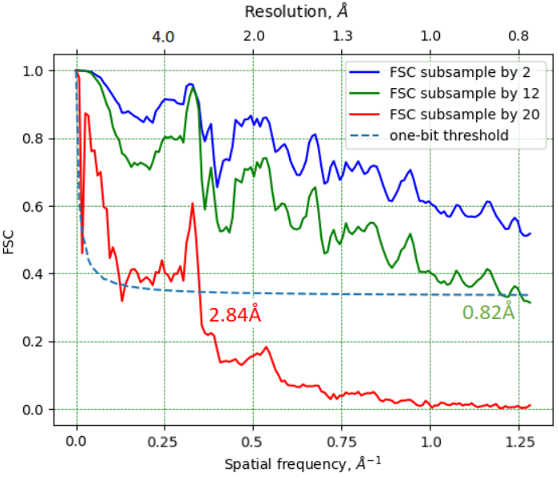
2.8 Å resolution with 2.2*104 e-/Å2 - virtual sub-sampling
0.82 Å resolution with 12x sub-sampling
You, Shengbo et al. (2024), doi:10.1088/1402-4896/ad9a1a
Wiring up your microscope for automated 4D-STEM tomography
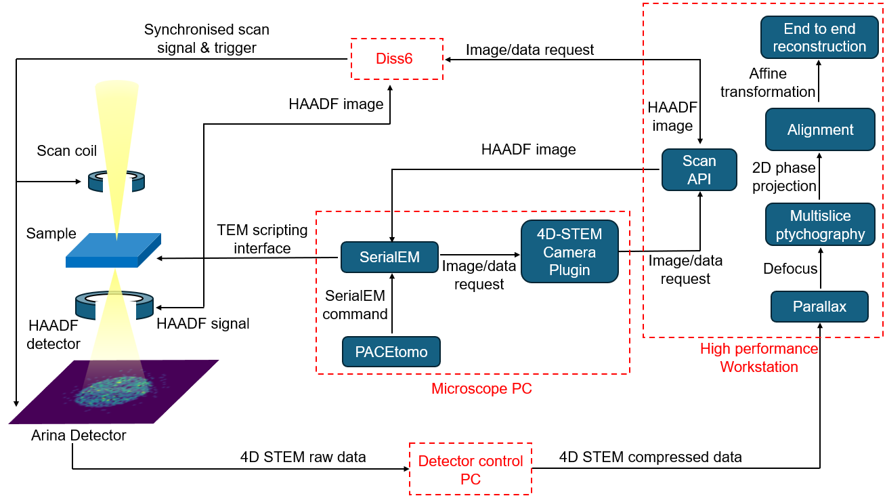
SerialEM plugins allow custom detectors and online image processing
Also with SerialEM plugin: Seifer, Shahar et al. (2024), doi:10.1093/mam/ozae050
Adopting the cryo-EM playbook: PACE-Tomo SOTA
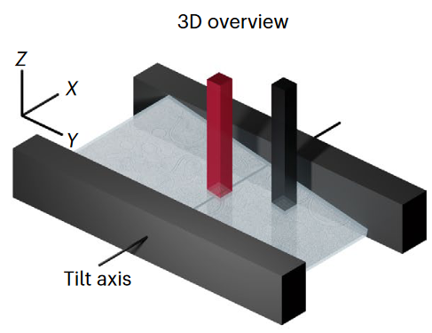
Tracking target on tilt-axis Imaging target off tilt-axis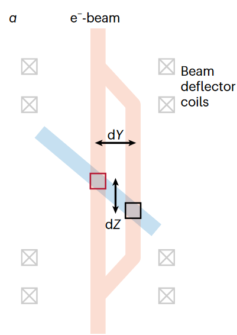
Geometric sample model that tracks shifts in 3D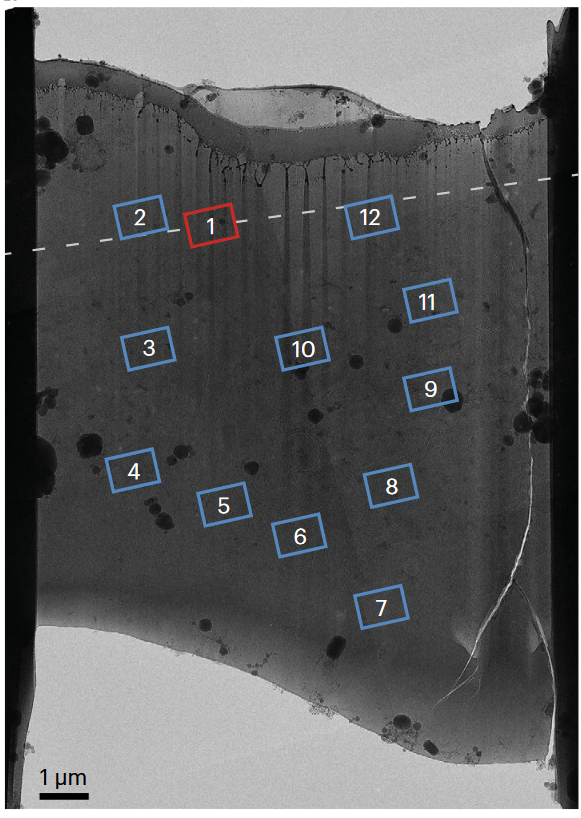
Multi-target acquisition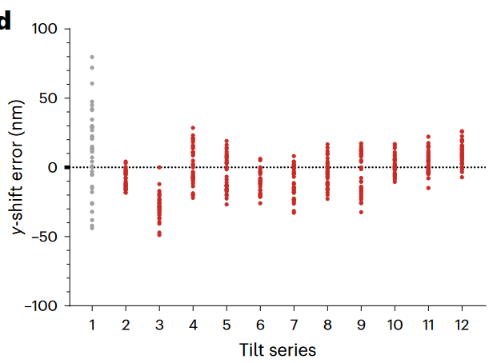
+- 50nm tracking errorsCryo-EM automation tools have nearly all desired features
but lack tracking precision and can be enhanced by real-time 4D-STEM
Eisenstein, Fabian et al. (2023), doi:10.1038/s41592-022-01690-1
Automated 4D-STEM tomography: first target
Sample synthesized by Xingchen Ye Group:
Gd2O3 nanohelices
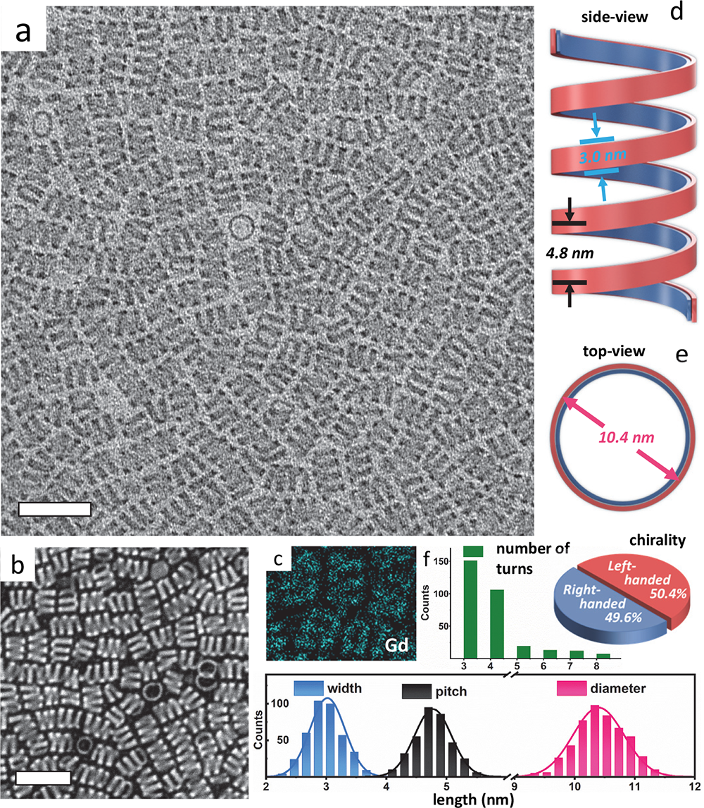
Liu, Yang et al. (2020), doi:10.1021/jacs.0c05175
Automated 4D-STEM tomography at atomic resolution


- Timing: 2 min. per tilt, 90 min. per tilt series
- No human intervention required after target selection
Bla
Cryo-EM automation tools can be adapted and enhanced for automated atomic resolution 4D-STEM tomography
You, Pelz et al. in preparation